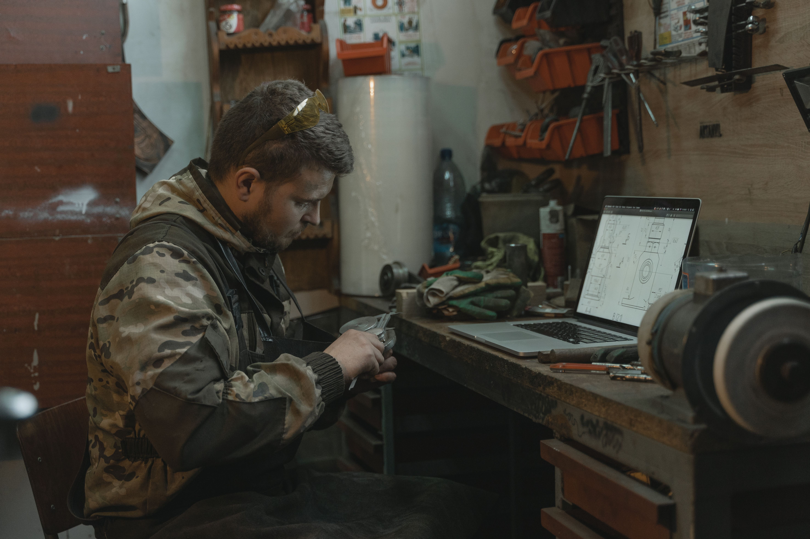

Our Services
TechFix Solutions repairs a wide range of everyday devices for students, households, gamers and small businesses. Below is a breakdown of what we offer.
Phone Repair

We repair most smartphone brands, including:
- Screen replacements
- Battery replacements
- Water damage recovery
- Charging port repairs
Laptop Repair

Our laptop repair service covers:
- Hardware diagnostics and component replacement
- Software troubleshooting and reinstalls
- Performance upgrades (RAM, storage)
- Keyboard and screen repairs
Gaming Console Repair

We service common consoles for issues such as:
- Overheating and fan replacement
- Disc drive faults
- Controller repairs
- General cleaning and maintenance
IT Support for Small Businesses

For small business clients, we offer:
- Basic network and Wi-Fi troubleshooting
- Computer setup and configuration
- Ongoing maintenance support